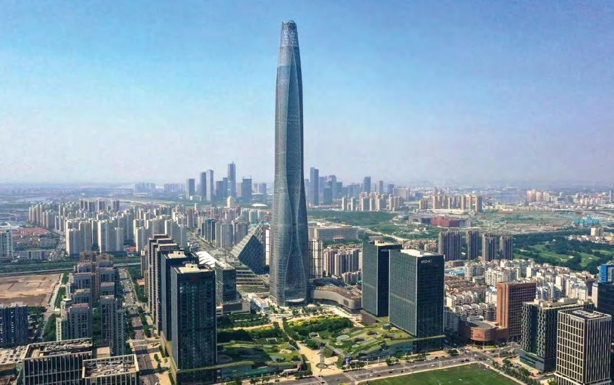

Największe budynki świataWalka o niebo najwyższe budynki świata kontynuują rywalizację w wyścigu do chmur, osiągając niegdyś nieosiągalne wysokości. Która wieża obecnie góruje nad resztą? Sprawdź ranking! Burj Khalifa - wysokość: 828 m. Ukończony w 2010 roku, Burj Khalifa jest najwyższym budynkiem na świecie i jednym z najbardziej rozpoznawalnych punktów orientacyjnych Dubaju. W wieżowcu o imponującej liczbie 163 pięter kryją się nie tylko biura, ale również luksusowe apartamenty oraz elegancki hotel. Ten drapacz chmur licznie odwiedza masa turystów z całego świata. Jednym z powodów odwiedzin jest zapierający dech w piersiach widok rozpościerający się z dwóch tarasów widokowych znajdujących się na 124. i 125. piętrze oraz na 148. piętrze. Bilety na taras obserwacyjny kosztują ok. 159 AED. Również w środku znajduje się restauracja, w której można zjeść posiłek na 122. piętrze. Oprócz statusu najwyższej wolnostojącej konstrukcji na świecie Burj Khalifa (Burdź Chalifa) pobił w przeszłości inne rekordy: miał najdłuższą windę i najwyżej położoną restauracją. Innym powodem odwiedzin tego giganta jest Dubai Mall – ogromne centrum rozrywkowo-gastronomiczne i centrum handlowe. Również znajdują się tutaj tańczące w rytm muzyki Fontanny Dubajskie. Jeśli chcecie się dowiedzieć więcej o atrakcjach w Dubaju, przeczytajcie nasz artykuł pt. Merdeka 118 – wysokość 678,9 m. Ukończony w 2023 roku i ma 118 pięter. Wewnątrz kryją się luksusowe apartamenty, nowoczesne biura i elegancki hotel, a w planach rozbudowy przewidziane są również miejsce kultu w postaci meczetu oraz muzeum. Nazwa wieży jest nieprzypadkowa, gdyż słowo "merdeka" w języku malajskim oznacza "niezależność". Budowla powstała w miejscu, w którym uchwalono niepodległość Malezji od Wielkiej Brytanie w 1957 roku. Ten drapacz chmur będziecie mogli zobaczyć podczas. Shanghai Tower - wysokość: 632 m.Ukończony w 2015 roku, jest najwyższym budynkiem w Chinach. Ma 128 pięter i w jego wnętrzu mieszczą się apartamenty i hotel. Budynek wyróżnia się architekturą, ma skręconą podwójna warstwę wierzchnią, co ma zmniejszyć kołysania przez wiatr. W budynku również zastosowano ognioodporne windy. Przy budowie tego giganta postawiono na nowe technologie, rozwiązania ekologiczne i bezpieczeństwo. Fasada Shanghai Tower mieści 270 turbin wiatrowych, wytwarzających energię dla budynku. Deszcz i ścieki są poddawane recyklingowi w celu spłukiwania toalet i nawadniania ogrodów budynku. Makkah Royal Clock Tower - wysokość: 601 m.Ukończony w 2012 roku, wieża zegarowa jest częścią kompleksu Abraj Al-Bait i znajduje się tuż obok Wielkiego Meczetu w Mekce. Ma 120 pięter. Mieszczą się w nim apartamenty i hotel. Na szczycie wieżowca zamontowano niedawno zegar, który stanowi największy tego typu obiekt na świecie. Zegar niemieckiej produkcji ma 43 metry wysokości i 45 metrów szerokości. Znajduje się z każdej z czterech stron budynku. Zegar jest widoczny z odległości 17 kilometrów w nocy oraz 12 kilometrów w dzień. Budynek jest nie tylko ważnym punktem orientacyjnym w Mekce, ale również ważnym miejscem zakwaterowania dla pielgrzymów przybywających do Wielkiego Meczetu. Ping An International Finance Centre - wysokość: 599,1 m. Ukończony w 2017 roku, wieżowiec jest siedzibą firmy ubezpieczeniowej Ping An i liczy sobie 115 pięter. Dla jego użytkowników przygotowano 80 wind. Najszybsza z nich przemieszcza się z prędkością 10 metrów na sekundę. Lotte World Tower – wysokość: 555,7 m. Ukończony w 2017 roku, jest to najwyższy budynek w Korei Południowej. Liczy sobie 123 piętra, na których znajduja się apartamenty, biura i hotel. Najwyższym punktem wykorzystanej przestrzeni, a jednocześnie punktem widokowym, jest 497,6 metr. Budynek powstawał przez 30 lat. Budynek został skonstruowany w taki sposób, by uzyskać akredytację certyfikatu Leadership in Energy and Environmental Design (LEED Gold). Certyfikat stanowiący o zaangażowaniu w dbałość o środowisko. W budynku zastosowano panele fotowoltaiczne, turbiny wiatrowe, zewnętrzne urządzenia zacieniające oraz systemy zbierania wody deszczowej. One World Trade Center - wysokość: 541 m. co czyni go szóstym co do wysokości budynkiem na świecie. Jest on najwyższym budynkiem na zachodniej półkuli, chociaż często mówi się, że gdyby nie liczyć 124 metrowej iglicy, to prześcignął by go chicagowski Willis Tower. Wysokość 1776 stóp nie jest przypadkowa, odpowiada ona rokowi podpisania Deklaracji Niepodległości Stanów Zjednoczonych. Guangzhou CTF Finance Centre - wusokość: 438.6 m. Tianjin CTF Finance Centre - wysokość 336,9 m. CITIC Tower - wysokość 528 м. TAIPEI 101 - wysokość 508 м. Shanghai World Financial Center - wysokość 492 m. International Commerce Centre - wysokość 484 m. Lakhta Center - wysokość 462 м. Vincom Landmark 81 - wysokość 461 м. Changsha IFS Tower T1 - wysokość 452 м. Naj wieksze budynki EuropyLakhta Center – wysokość: 462 m.Ukończony w 2019 roku, jest to obecnie najwyższy budynek w Europie i siedziba koncernu Gazprom. Mercury City Tower – wysokość: 338,8 m.Ukończony w 2013 roku, był przez pewien czas najwyższym budynkiem w Europie, zanim został prześcignięty przez Lakhta Center. Varso Tower – wysokość 310 m. Tower, po ukończeniu, stał się najwyższym budynkiem w Polsce, przewyższając wcześniejsze budynki takie jak Warsaw Spire czy Pałac Kultury i Nauki. To również najwyższy budynek w Unii Europejskiej. |